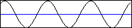

mDecSizeRows
Сжатие сигналов в строках матрицы
Объявление функции
procedure mDecSizeRows(Ws: TWorkspace; SourAr, DestAr: String;
NumPoints: Integer);
Назначение
Процедура сжимает сигналы, хранящиеся в строках матрицы с помощью параболической интерполяции. SourAr - массив исходных сигналов, DestAr - сжатый выходной массив. NumPoints - количество точек в выходном массиве. Ws - ссылка на рабочую область, хранящую входные данные. Суть алгоримта заключается в том, что сигнал с помощью параболической интерполяции сперва растягивается до определенного числа точек, а затем из полученного массива происходит выборка необходимого числа точек.
Примеры
Пусть имеется массив А, полученный в результате операции A=sin(1:0.1:20).*20 (запись операции на языке Matlab). Графически массив А будет выглядеть следующим образом:

Массив А имеет 191 точку. Теперь сожмем его до 100 точек:
mDecSizeRows(Base, 'A', 'A', 100);
В результате изображение графика будет сжатым: